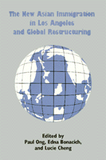

<body bgcolor="#FFFFFF" text="#000000" link="#0000FF" vlink="#CC0000" alink="#CC0000"><center><hr width="350" size="1" align="center" noshade>How Asian immigration impacts the global economy<hr width="350" size="1" align="center" noshade><p><a href="https://cdcshoppingcart.uchicago.edu/Cart/ChicagoBook.aspx?ISBN=9781566392174&&PRESS=temple" target="_top">Buy this book!</a> | <a href="https://cdcshoppingcart.uchicago.edu/Cart/Cart.aspx?PRESS=temple" target="_top">View Cart</a> | <a href="https://cdcshoppingcart.uchicago.edu/Cart/Cart.aspx?PRESS=temple" target="_top">Check Out</a></p><p></p></center><!--none//--><h1>The New Asian Immigration in Los Angeles and Global Restructuring</h1>
<h3>edited by Paul Ong, Edna Bonacich and Lucie Cheng</h3>
<P>cloth 1-56639-217-9 $74.50, Sep 94, <FONT COLOR=#990033>Out of Stock Unavailable</FONT>
<br>paper 1-56639-218-7 $35.95, Aug 94, <FONT COLOR=#990033>Available</FONT>
<br>Electronic Book 1-43990-158-9 $35.95 <FONT COLOR=#990033>Out of Stock Unavailable</FONT>
<BR> 344 pp
6x9
19&nbsp;tables 2&nbsp;figures
</P><BLOCKQUOTE><I>"[A]n excellent volume that...articulates the connections among global, national, and regional processes, and situates Asian immigration experiences within this nexus."</I>
<br>&#151<b><I>Contemporary Sociology</I></b><I></I></BLOCKQUOTE>
<p>The end of 'World War II and the enactment of the Immigration and Naturalization Act of 1965 marked the beginning of a new Asian immigration. The new Asian immigrants&#151among them higher proportions of women and middle-class professionals, managers, and entrepreneurs&#151have been profoundly affected and influenced by the restructuring of the global economy, particularly in Pacific Rim industries. This volume focuses on Los Angeles as a critical "world city" in the developing global economy and also as the center of new Asian immigration. Included are discussions of the settlement patterns of various groups of Asians in relation to the social, economic, and political developments in Asia and the United States. At a local level, the contributors examine the garment and health care industries in Los Angeles to explore the role of new Asian immigrants in the city's economy and politics.
<BR>&nbsp;<h2>Contents</h2><P>
<p>Preface
<p><b>Part I: Introduction</b>
<br>1. The Political Economy of Capitalist Restructuring and the New Asian Immigration &#150 Paul Ong, Edna Bonacich, and Lucie Cheng
<p><b>Part II: Immigration Patterns</b>
<br>Introduction &#150 Lucie Cheng
<br>2. U.S. Immigration Policies and Asian Migration &#150 Paul Ong and John M. Liu
<br>3. Pacific Rim Development and the Duality of Post-1965 Asian Immigration to the United States &#150 John M. Liu and Lucie Cheng
<br>4. Asian Immigrants in Los Angles: Diversity and Division &#150 Paul Ong and Tania Azores
<p><b>Part III: Economic Incorporation</b>
<br>Introduction &#150 Paul Ong
<br>5. Asians in the Los Angeles Garment Industry &#150 Edna Bonacich
<br>6. The Migration and Incorporation of Filipino Nurses &#150 Paul Ong and Tania Azores
<br>7. Chinese-Vietnamese Entrepreneurs in California &#150 Steve Gold
<p><b>Part IV: Political Struggles</b>
<br>Introduction &#150 Yen Espiritu
<br>8. The New Chinese Immigration and the Rise of Asian American Politics in Monterey Park, California &#150 Leland T. Saito and John Horton
<br>9. The Korean-Black Conflict and the State &#150 Paul Ong, Kye Young Part, and Yasmin Tong
<br>10. Class Constraints on Racial Solidarity among Asian Americans &#150 Yen Espiritu and Paul Ong
<p>Conclusion &#150 Edna Bonacich, Paul Ong, and Lucie Cheng
<br>About the Editors and Contributors
</P><BR>&nbsp;<H2>About the Author(s)</H2>
<table><tr><td valign="top"><img src="/tempress/authors/1025_au1.gif" height="90" width="75"></td><td width="100%" valign="middle"><p><b>Paul Ong</b> is Associate Professor of Architecture and Urban Planning at the University of California, Los Angeles.</P></td></tr></table><table><tr><td valign="top"><img src="/tempress/authors/1025_au2.gif" height="90" width="75"></td><td width="100%" valign="middle"><p><b>Edna Bonacich</b> is Professor of Sociology and Ethnic Studies at the University of California, Riverside.</P></td></tr></table><table><tr><td valign="top"><img src="/tempress/authors/1025_au3.gif" height="90" width="75"></td><td width="100%" valign="middle"><p><b>Lucie Cheng</b> is Professor of Sociology at the University of California, Los Angeles.
<p>Edna Bonacich, Lucie Cheng, Norma Chinchilla, Nora Hamilton, and Paul Ong have also co-edited <I><A HREF="1027_reg.html" TARGET="_top">Global Production: The Apparel Industry in the Pacific Rim</A></I> (Temple).</P></td></tr></table>
<P>Contributors: Tania Azores, Yen Espiritu, Steve Gold, John Horton, John M. Liu, Kye Yong Park, Leland T. Saito, Yasmin Tong, and the editors.</P>
<BR><H2>Subject Categories</H2>
<p><A HREF="/tempress/asian_amer.html" TARGET="_top">Asian American Studies</a>
<BR><A HREF="/tempress/urban.html" TARGET="_top">Urban Studies</a>
<BR><A HREF="/tempress/immigration.html" TARGET="_top">Immigration Studies</a>
</p>
<BR><h2 class="inpageheading">In the series</H2>
<P><I><a href="http://www.temple.edu/tempress/asam_history.html" onMouseOver="window.status='Click for other books in this series!'; return true;" onMouseOut="window.status=''; return true;" target="_top">Asian American History and Culture</a></i>, edited by K. Scott Wong, Linda Trinh Võ, and Cathy Schlund-Vials.
</p><p>Founded by Sucheng Chan in 1991, the <I>Asian American History and Culture</I>, series has sponsored innovative scholarship that has redefined, expanded, and advanced the field of Asian American studies while strengthening its links to related areas of scholarly inquiry and engaged critique. Like the field from which it emerged, the series remains rooted in the social sciences and humanities, encompassing multiple regions, formations, communities, and identities. Extending the vision of founding editor Sucheng Chan and emeriti editor Michael Omi and David Palumbo-Liu, series editors K. Scott Wong, Linda Trinh Võ, and Cathy Schlund-Vials continue to develop a foundational collection that embodies a range of theoretical and methodological approaches to Asian American studies.</p>
<p align="center"><a href="https://cdcshoppingcart.uchicago.edu/Cart/ChicagoBook.aspx?ISBN=9781566392174&&PRESS=temple" target="_top">Buy this book!</a> | <a href="https://cdcshoppingcart.uchicago.edu/Cart/Cart.aspx?PRESS=temple" target="_top">View Cart</a> | <a href="https://cdcshoppingcart.uchicago.edu/Cart/Cart.aspx?PRESS=temple" target="_top">Check Out</a></p><p><font face="Arial" size="1"><a href="copyright.html" onMouseOver="window.status='Web Copyright Policy';return true;" onMouseOut="window.status=''" title="Web Copyright Policy">&copy;</a> 2015 <a href="http://www.temple.edu" target="new" onMouseOver="window.status='Link to Temple University home page';return true;" onMouseOut="window.status=''" title="Link to Temple University home page">Temple University</a>. All Rights Reserved. http://www.temple.edu/tempress/titles/1025_reg.html</font></p>